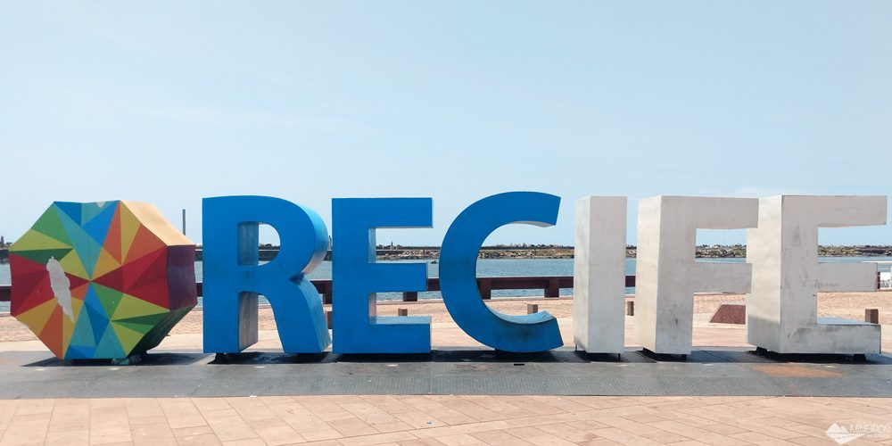

Outros pontos turísticos

Marco Zero
Conhecendo Recife Antigo!
Marco Zero
Marco Zero
Circular pelo Recife Antigo e conhecer o Marco Zero.
Para quem tá a fim de um passeio histórico, o centro antigo é a melhor escolha. Isso porque é ali onde fica o Marco Zero da cidade. Ou seja: acredita-se
que foi neste mesmo local onde ocorreu a fundação de Recife, assim como é a partir dele de onde se calculam as distâncias a outros lugares.
Mas a região vai além e concentra pontos turísticos e muitas construções charmosas, que remetem à época do Brasil Colônia.